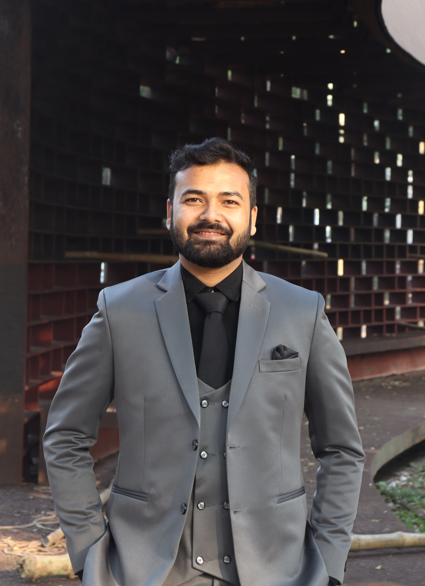
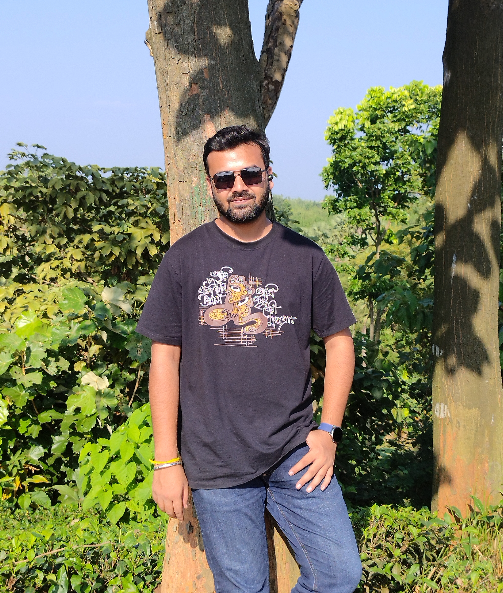
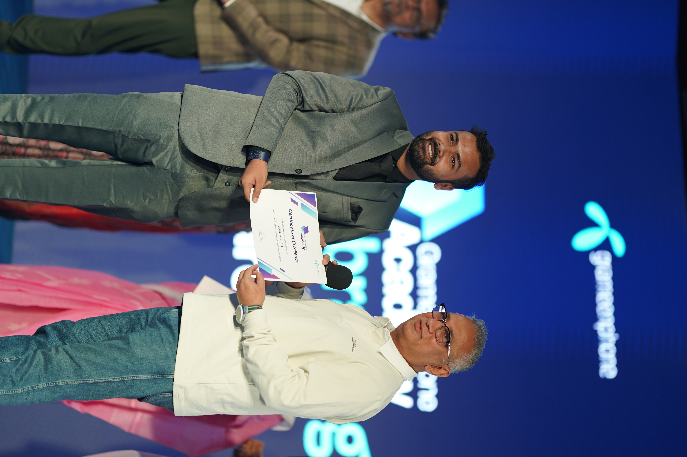
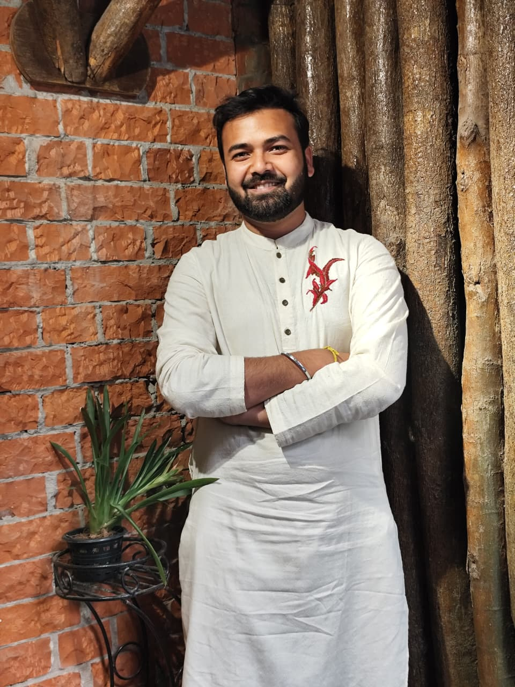

M.Sc. Researcher · Communications Engineering · Machine Learning & 6G Systems




I'm a student at the University of Dhaka, currently pursuing M.Sc. with focus on Communications Engineering. My research sits at the intersection of smart agriculture systems, next-generation wireless networks and anti microbrial resistance.
On the hardware side, I work with NodeMCU, DHT11, NPK and soil moisture sensors for IoT deployments. On the theoretical side, I'm developing a novel layer-wise framework for 6G enhanced uplink implementation — IEEE-publication track. Also currently I'm working on machine learning for AMR as my masters project.
Beyond the lab: former Treasurer of IEEE SB DU, IEEE Puzzlers mentor, Grameenphone GP Explorer intern, and a proud member of the Dhaka University Rover Scout Group.
Download CV ↗M.Sc. in EEE
University of Dhaka · 2025 – PresentB.Sc. in EEE
University of Dhaka · 2020 – 2025HSC — Board Scholarship
New Govt. Degree College, Rajshahi · 2019SSC — Board Scholarship
Badalgachhi Pilot High School · 2017Treasurer, IEEE Student Branch DU
IEEE · 2024 – 2025Puzzle Maker & Mentor
IEEE Puzzlers · 2023 – 2025Industry Intern — GP Explorer 2.0
Grameenphone · 2024Rover Mate, DURSG
Dhaka University Rover Scout GroupVolunteer — Fab Lab DU
University of DhakaSoil quality monitoring using NPK, DHT11, and moisture sensors on NodeMCU8266 with Firebase backend and ML-driven crop recommendation engine.
Theoretical framework targeting IEEE publication. Investigates uplink performance optimization strategies within the 6G protocol stack with layer-specific RF considerations.
An interpretable ML pipeline combining SHAP, Grad-CAM, MC-Dropout, and conformal prediction extracts temporal early warning signal features from bacterial microscopy time-lapses to predict cell division behaviour, finding that growth rate dynamics outperform cell morphology as predictors.